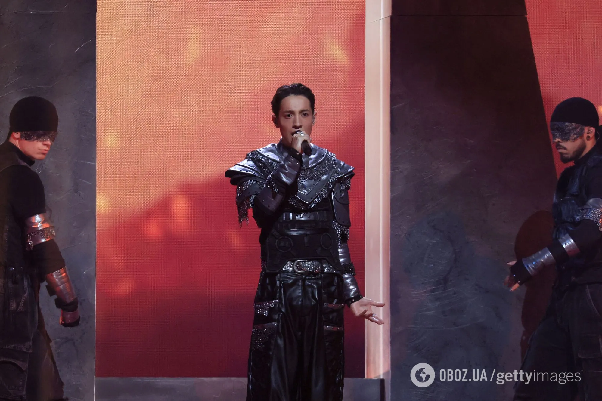

БЕЗ СЛІВ

Я великий фанат Євробачення. Щороку цей конкурс об'єднує мільйони людей у любові до музики, культури та емоцій. Це більше, ніж шоу — це символ єдності та надії.
Я з дитинства дивлюсь кожен ефір і завжди вболіваю за наших виконавців. Для мене важливо не тільки шоу, а й ті послання, які учасники передають через музику.
Моє хобі — аналізувати виступи, оцінювати постановки, голос і сценічну подачу. Я веду невеликий блог, де ділюсь враженнями, прогнозами та топами. Це моє захоплення і натхнення.